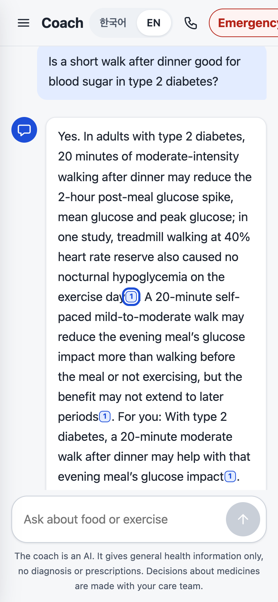

GPA 4.0/4.0
AI Agent Engineer
Sihun Wang
Multi-Agent System 개발을 중심으로 A2A Communication과 Personal Agent로 확장하는 AI Agent Engineer를 목표로 합니다.
한국에서 반장을 비롯한 학급 임원으로 수년간 활동한 뒤 미국으로 유학을 떠났습니다. 유학 중에는 미국 수학경시대회 조지아주 지역 대표로 두 차례 선정되었습니다. 이후 미국 인공지능 분야 최상위권 대학인 일리노이대(UIUC)와 조지아공대(Georgia Tech)에 진학해 AI를 공부했습니다. 두 대학은 U.S. News 인공지능 분야 순위에서 각각 미국 내 6위와 5위에 올라 있습니다. 미국과 한국의 AI 연구실에서 연구하고, 한국 기업에서 일하며 AI 모델링부터 AI Agent 개발까지 경험을 쌓았습니다. 현재는 AI Agent 설계와 개발에 주력하고 있습니다. 앞으로는 Multi-Agent System과 Agent-to-Agent(A2A) Communication을 깊이 탐구하고, 개인화 AI Agent 기술을 연구하고 개발하고자 합니다.
한눈에 보기
| 학력 |
B.S., University of Illinois Urbana-ChampaignStatistics | Minors: Computer Science, Data Science, Informatics
M.S., Georgia Institute of TechnologyComputer Science - Artificial Intelligence
| 자세히 보기 |
|---|---|---|
| 경력 |
Flitto | Operation Support (AI) - AI Agent, Prompt Engineering, LLM Evaluation
Korea Data Network | Data Engineer - Automation, Data Pipeline, API Integration, OpenPyXL
IEA Lab (UIUC) | LLM Researcher - Multi-Agent, Agentic RAG, RAG Evaluation
| |
| 프로젝트 | ||
| 기술 | LangGraph, Agentic RAG, Hybrid Search, LLM Evaluation, HITL | 자세히 보기 |
01
학력
미국 AI 분야 최상위권 대학 (AI Overviews) U.S. News & World Report: Best Artificial Intelligence Programs
University of Illinois Urbana-Champaign (일리노이 대학교 어바나-샴페인)
B.S. Statistics, Minors in Computer Science, Data Science, and Informatics
2018–2025GPA 3.62/4.00Dean's List (1 semester)
02
경력
Flitto
Operation Support (AI)
- AI 다국어 번역 상장사이자 한국 독자 파운데이션 모델 프로젝트 참여사인 Flitto에서 LG전자 및 올리브영 대상 다국어 번역 AI Workflow 개선
- LangChain 기반 번역 유창성 평가 Agent 개발 및 Cluster-based Few-Shot Prompting을 활용한 11개 언어별 Prompt 최적화
- 총 4,983건의 번역 결과에 대해 LLM-as-a-Judge, xCOMET 등 4개 자동 평가 지표를 활용한 품질 평가 Pipeline 구축
- 저득점 번역을 Human-in-the-Loop(HITL) 검수로 연결하여 자동 평가와 전문가 검토를 결합한 품질 관리 체계 구현
- 외부 PoC 검수에서 200건 중 195건 무수정 통과, 97.5% 승인율 달성

Korea Data Network
Data Engineer
- 국세청 API와 공공 데이터를 활용하여 기존 수작업 기반의 데이터 수집, 검증 및 처리 프로세스를 Python 기반 Pipeline으로 자동화
- API, Selenium, BeautifulSoup을 활용한 데이터 수집 및 식별자 매핑 로직 구현
- OpenPyXL을 활용하여 고유 식별번호 645건에 대한 데이터를 조회하고 Excel 30개 시트 내 2,346개 셀 입력 자동화
- 실행 결과와 오류 로그를 분석하는 Error Triage Agent 개발, API 요청 실패 45건 전량 재처리
- 반복적인 업무 처리 자동화를 통해 주간 데이터 갱신 시간을 60분에서 10분으로 단축
Information Experience and Accessibility Lab
LLM Researcher
- IEA Lab(일리노이대)에서 고령자의 개인별 건강정보와 의학적 근거를 활용한 AI Agent 시스템 연구 및 개발
- LangGraph 기반 Supervisor Agent와 전문 Agent 5개로 구성된 Multi-Agent Orchestration 설계 및 병렬 실행 구조 구현
- 개인별 건강 기록과 의학 논문을 연계한 Agentic RAG Pipeline 구축, 근거 기반 응답 생성 및 근거 불충분 시 답변 보류 로직 설계
- Supervisor Routing, Retrieval, Evidence Selection 및 응답 품질을 평가하는 LLM Evaluation 체계 구성
- Standard RAG, Agentic RAG, Single-Agent, Multi-Agent 등 Architecture별 성능 비교를 통한 Agent 설계 방식 검증

경희대학교 빅데이터응용학과
Teaching Assistant
- 경희대학교 대학원 Federated Learning 교과목에서 수강생 21명 대상 강의 및 프로그래밍 실습 지원
- Machine Learning, Deep Learning, Federated Learning 핵심 개념과 구현 방법을 설명하는 실습 4회 설계 및 진행
Artificial Intelligence & Business Model Laboratory
AI Researcher
- 세계에서 가장 작은 Artificial Neural Network 모델 개발을 목표로 Deep Learning Architecture, Layer 구성 및 Parameter 구조 분석
- 여러 인공지능 모델의 구조와 Parameter 규모를 비교하여 초경량화 가능성 연구
- 경량화 ANN에 Federated Learning을 적용하고 분산 데이터 환경에서의 학습 가능성 검증
- 경량화 CNN 모델에서 98% 정확도 달성 및 서울 Federated Learning Forum에서 발표
03
대표 프로젝트




- 개인 건강정보와 연구 근거를 바탕으로 생활습관을 안내하는 건강 코칭 챗봇을 개발했습니다.
- 사용자의 질문에 따라 건강 기록 조회와 논문 검색을 선택하고, 답변과 함께 근거 문장을 제공합니다.
- Multi-Agent와 Agentic RAG를 활용해 복합 질문에 필요한 근거를 선별하고, 이를 바탕으로 신뢰도 높은 답변을 생성합니다.
- LangGraph Supervisor와 Tool Routing, Hybrid Search RAG, 근거 인용, 안전 규칙을 통합했습니다. 200개 Benchmark에서 통과율 90.5%, API 오류 0건을 기록했으며, 다른 3개 Agent/RAG 아키텍처보다 8.0–8.5%p 높았습니다.
LangGraph Multi-Agent, Supervisor Routing, Query Expansion, Hybrid Search RAG, Evidence Citations, Safety Rules


- CSV와 직접 입력 문장을 대상으로 번역 품질을 검수하고 수정하는 Agent 기반 Workflow를 개발했습니다.
- Agent Strategy Selection가 MQM 오류와 이전 시도 이력을 바탕으로 다음 수정 전략을 선택하고, 정확성·용어·철자·문법·문체·유창성별 수정 Chain을 호출합니다.
- 각 후보를 Python 결정적 검증과 MQM 재평가로 검증해 개선되지 않으면 Rollback하고, 미해결 사례는 OpenAI Escalation과 HITL 승인으로 넘깁니다.
Translation Quality Agent, Agent Strategy Selection, MQM Error Routing, Category-Specific Revision Chains, LangChain LCEL, Deterministic Validation, Rollback, OpenAI Escalation, HITL
국세청 세금 납부 및 한국농촌경제연구원 데이터 파이프라인
- 국가 농업통계 조사와 납세 여부 확인에 필요한 데이터를 수집하고 검증하는 자동화 파이프라인을 개발했습니다.
- 외부 API와 웹 데이터를 식별자 기준으로 연결하고 Excel 문서와 지도 좌표까지 처리했습니다.
- Python, API fallback, Selenium, Beautiful Soup, OpenPyXL, execution logs를 사용해 반복 업무를 약 3시간에서 최종 검증 10분 수준으로 줄였습니다.
Python, API Integration, Identifier Mapping, Fallback Logic, Exception Handling, Execution Logs, Selenium, OpenPyXL
- 발표 지문을 바탕으로 질문 은행을 준비하고, 답변에 따라 꼬리질문과 끼어들기를 생성하는 음성 모의 면접 Agent를 개발했습니다.
- Silero VAD와 Faster-Whisper STT로 발화를 처리하고, Ollama LLM과 로컬 TTS로 질문을 음성으로 재생합니다.
- 질문 유형별 기록, 판정 근거, 경과 시간과 꼬리질문 및 끼어들기 횟수를 보고서로 제공합니다.
Python asyncio, Faster-Whisper STT, Silero VAD, Ollama, Supertonic TTS
Repository프로젝트 화면 보기

- Claude와 Codex의 사용량을 메뉴 바에서 확인하는 macOS 앱을 개발했습니다.
- 5시간 및 주간 사용량, 초기화 시각, 최근 기록과 설정 메뉴를 한 화면에서 확인할 수 있습니다.
- Swift 6, SwiftPM, LaunchAgent, Swift Testing으로 백그라운드 갱신과 Threshold Alert, Usage Coach를 구현했습니다.
Swift 6, SwiftPM, LaunchAgent, Swift Testing
Repository04
기술
- Agent Systems
- LangGraph Supervisor, Multi-Agent Subgraphs, Conditional Routing, Concurrent Execution, Tool Calling, Interrupt and Checkpointer
- RAG and Grounding
- Agentic RAG, Query Expansion, Hybrid Search, Semantic Search, BM25, Chunking, Evidence Selection, Citation Mapping, Grounded Generation
- Evaluation and Safety
- Benchmark Design, LLM-as-a-Judge, MQM, xCOMET, HITL, Deterministic Safety Rules, Rollback, Audit Logs
- Programming
- Python, Java, R
- Machine Learning and Deep Learning
- PyTorch, TensorFlow, CNN, RNN, LSTM, MLP, Linear Regression, XGBoost, KNN, Federated Learning, Model Compression, Statistical Analysis
05
수상 및 기여
UIUC Data Dive Team Competition (2023)
주가 데이터를 활용한 Machine Learning 분석 경진대회 Team 4위 (2023)
Georgia Southern University Mathematics Tournament (2017, 2018)
미국 수학경시대회 조지아주 동남부 지역 대표(2017, 2018), 개인 2위(2017, 2018), 단체 1위(2017, 2018)